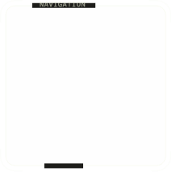
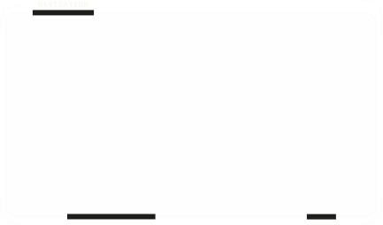
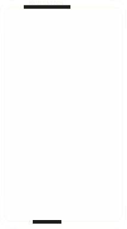
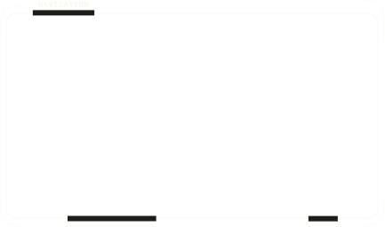

Right hand → bulge distortion. Flip right palm → toggle menu. Left hand up/down → chromatic aberration. Flip left palm → switch image. Pinch with both hands & spread → scatter elements. Voice: say “open menu” or “change background”.



